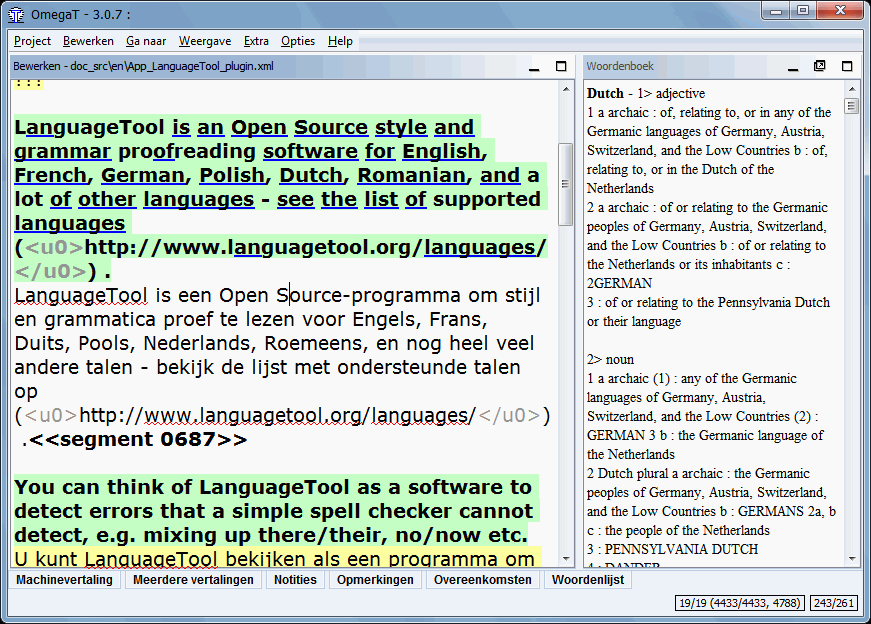

Woordenboeken
Hoe woordenboeken te downloaden en te installeren
Woordenboeken in OmegaT zijn gebaseerd op het StarDict Platform. Doe het volgende om de benodigde bestanden te installeren:
- Zoek naar de gewenste taalcombinatie -bijvoorbeeld het StarDict Platform hierboven of op FreeDict
- Download het bestand - het zou een tarball-archief (extensie tar.bz of tar.bz2) moeten zijn.
- Gebruik untar (of soortgelijk (bijvoorbeeld winrar in Windows) om de inhoud uit te pakken naar de projectmap "Dictionary". Er zouden drie bestanden moeten zijn, met de extensies dict.dz, idx en ifo.
Merk op dat dat u, aanvullend aan de "bron-doel" woordenboeken, via Dictionary, toegang kunt krijgen tot informatie zoals:
- Webster's Revised Unabridged
Dictionary (1913)
- Longman Dictionary of
Contemporary English
- Merriam Webster 10th
dictionary
- The Britannica Concise
Encyclopedia
- ...etc
Sommige woordenboeken verplichten tot niets - dat is zijn "Vrij te gebruiken", en sommige, zoals de selectie hierboven, bevinden zich onder de GPLlicentie. Het volgende voorbeeld toont het woordenboek Merriam Webster 10th dictionary "in actie":

Problemen met woordenboeken
Als uw woordenboek leeg is, controleer dan het volgende:
- Staan de bestanden van het woordenboek in de map (of in één van de submappen daarvan), die is gespecificeerd in uw projectbestand? Controleer het in het venster Projecteigenschappen (menu Project → Eigenschappen of
Ctrl+E)?
- Bevat de map drie bestanden met dezelfde naam en met de extensies dict.dz, idx en ifo? Indien er slechts één bestand is met de verwachte naam, controleer dan de extensie er van. Als het tar.bz is, dan bent u vergeten het uit te pakken (unrar).